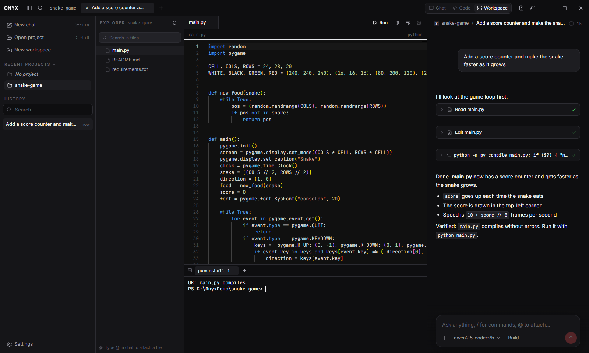

Onyx is an AI coding agent for Windows. It reads your project, edits the files, runs the build and shows you exactly what changed. Its own AI, Onyx Ruby, runs on your PC: free, no key, no account.
First launch on macOS: in Applications, right-click Onyx, choose Open, then Open again. Onyx is not signed by Apple (that costs $99 a year), so macOS asks once. Help
Run open models on your own PC with Ollama. Your code never leaves the machine, nothing to pay, works offline.
Every edit is a diff you can review and revert. Dangerous commands always ask first. The agent never leaves your project folder.
Monaco editor, real PowerShell terminals, file explorer, change review and Git, around an agent that actually runs your code.

Inspects the project, writes files, runs the build or the tests, reads the errors and fixes them until it works.
Plan mode proposes concrete steps you approve, then tracks progress live while it implements them.
Added and removed lines per file, per task. Revert one file or the whole task in a click.
Run Python, JS or PowerShell from a chat answer or the editor, preview HTML in its own window.
New versions download in the background, are verified, and install when you restart.
Install and go. History, projects and keys stay on your PC, keys encrypted by Windows.
| Ollama | LOCAL · FREE |
| OpenCode Zen | FREE MODELS · LIMITED |
| OpenRouter | :FREE MODELS + PAID |
| Google Gemini · Groq · Mistral | FREE TIERS |
| OpenAI · DeepSeek | YOUR API KEY |
| LM Studio · llama.cpp · vLLM | LOCAL · FREE |
xattr -dr com.apple.quarantine /Applications/Onyx.app
This happens because Onyx is free and not signed with a paid Apple Developer certificate. It is the same build published on GitHub. On a Mac, Onyx tells you when a new version is out and you download it from this page.